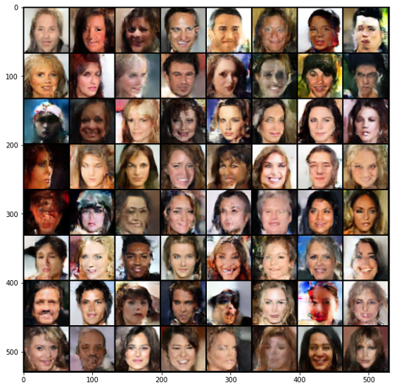

Face Generation with RealNVP
A normalizing flow learns an invertible map between faces and plain Gaussian noise. Because every step can be undone exactly, the model gives the true likelihood of an image, not a bound or a guess.
- Normalizing flows
- EECS 6327 · Probabilistic Models in ML
- York University
- PyTorch · CelebA
The key trick: affine coupling
Split the input in two halves. Leave one half unchanged and use it to compute a scale s and a shift t for the other half. The step is trivially invertible (subtract t, divide by es), and its Jacobian is triangular, so the log-determinant is simply the sum of s. Stack many such layers, swapping which half is frozen, and the map becomes very expressive.
Two coupling layers on a 2-D Gaussian
InteractiveLayer 1: y2 = x2·es(x1) + t(x1). Layer 2 swaps roles: y1 = x1·es(y2) + t(y2). Here s(u) = a·tanh(u) and t(u) = b·u² for layer 1, and c, d for layer 2. A real flow learns s and t with neural networks.
Results

Samples are sharp and show realistic skin, hair and lighting, with some warped faces where the flow has not learned the global structure. In the three-way comparison RealNVP was the sweet spot: about twice as slow as DCGAN but stable to train, and much sharper than the VAE.
Why flows are attractive. Exact likelihoods make flows easy to evaluate and compare, and they support exact encoding of a real image into latent space, which GANs cannot do and VAEs only approximate.